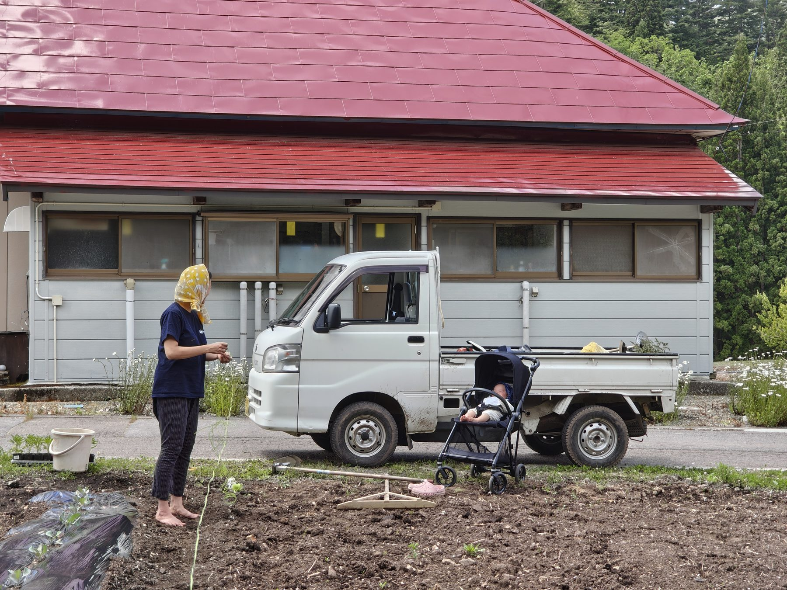

村に移住して現場を一緒につくるか、定期的に通って、滞在中に活動を共にするか。関わり方は二つあります。
5〜10年をかけて、暮らしと社会を一緒につくっていく「始まりの仲間」を2〜3名ほど募っています。
本募集では地域おこし協力隊制度を活用予定です。地域要件を満たす方には地域おこし協力隊として業務委託する可能性があります。

家族での移住も歓迎しています
自然を相手にする仕事のため、その都度、臨機応変な対応を求められます。
また、地域の特性上、12月〜3月ごろまで雪かきが必要です。雪は最大で2メートルを超えます。夏場は草刈りを毎月5日間前後する必要があります。
コンビニや夜に外食するお店はない地域のため、原則として自炊が基本となります。
住んで支える ── 大学を休学し、無の会の春の農繁期に住み込みで大活躍した一翔くん
いまの仕事と暮らしを続けながら、この構想の現場に関わりたい人へ。
現在、企業さんを含む4組の方々が、この形で関わってくださっています。
興味のある方は、まずは現場へ援農・視察にお越しください。
下記の応募フォームよりお申し込みください。
パートナーのNomadicsの皆さんによる水路の泥上げ
月に一回通っているアトリアの皆さんとの、無の会の田植え作業
パートナーの友里恵さん（右）と一緒に、昭和村のマルシェにて
移住メンバー・通いメンバーのどちらについても、こちらからご相談いただけます。現時点で決めきれていないことがあっても構いません。いただいた内容は担当者が確認し、追ってご返信します。
会津・奥会津に築く、生命の基盤。
新しい豊かさへとつづく道。
連絡先：official@zen-bu.co ／ 発行：株式会社ZEN-BU